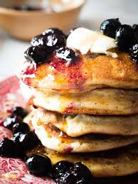

Blueberry Pancakes
Fluffy pancakes bursting with fresh blueberries.
Ingredients
- 1 cup all‑purpose flour
- 1 tbsp sugar
- 1 tsp baking powder
- 1 egg
- 1 cup milk
- ½ cup fresh blueberries
Steps
- Whisk together dry ingredients.
- Beat in egg and milk until smooth.
- Fold in blueberries.
- Cook ¼‑cup scoops on hot griddle until golden.
- Flip, cook other side, then serve warm.